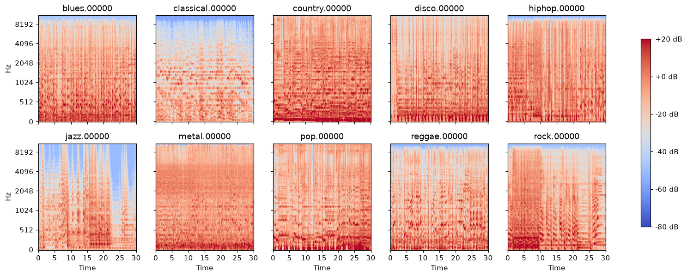
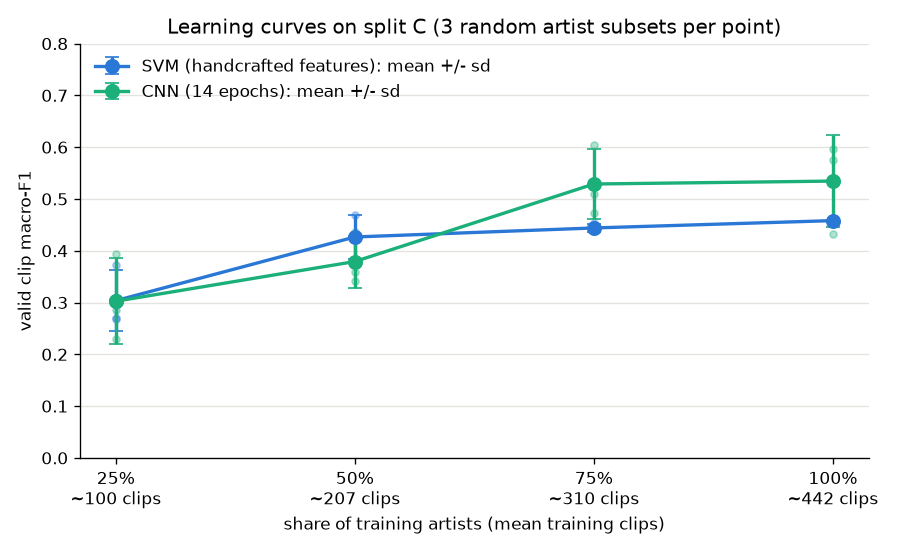

The question, and what one row is
Question. How well can a model predict a 30-second clip's genre from the audio alone, and how much of that accuracy survives when the test set contains no artist the model heard in training?
One row. We predict one 30 s clip (the unit of every reported score). A model trains on one 3 s window of audio with its clip's genre as the label: 10 rows per clip, so 4,420 training rows from 442 training clips. All ten windows of a clip always stay in the same part, so a clip is never split between train and test.
Why it matters. GTZAN is the standard benchmark for this task, yet it holds several clips per artist and some repeated recordings. A random split can therefore reward recognising a performer or a recording instead of a genre. The rest of this page measures that gap.
In plain words
Imagine a quiz where the same singer appears in both the practice questions and the exam. A student could pass by memorising the voice, without learning what "jazz" sounds like. Our test asks: how well does the model do when the singers in the exam are new?
How the page is organised
- Questionwhat we predict
- DataGTZAN and its faults
- Methodpreprocessing, models, splits
- Ladderleakage removed step by step
- Modelsall models, one fair test
- Errorswhat gets confused with what
- Limitswhat this does not show
The answer in one number
Data
GTZAN (Tzanetakis & Cook, 2002): 1,000 clips of 30 s, 100 per genre, 22,050 Hz mono, in 10 genres: blues, classical, country, disco, hip-hop, jazz, metal, pop, reggae and rock. We downloaded it from a Kaggle mirror. The audio is not republished here.
Size and key variables
| Variable | What it is |
|---|---|
| Clip (1,000 files; 999 readable) | 30 s of audio at 22,050 Hz mono, about 660,000 samples. Clip length varies by under 0.7 s. |
| Genre (target) | One of 10 labels, 100 clips each (99 for jazz, because one file is unreadable). |
| Artist (grouping variable) | 321 distinct artist names from gtzan-bind; 14 clips have no artist label. Used only to build splits and bootstrap intervals, never as a model input. |
| Window (training row) | A 3 s slice: 57 handcrafted features for the classical models, or a 128-band log-mel image for the CNN. |
| Split part | train, valid or test, assigned per clip. Split C has 442 / 197 / 290 usable clips. |
Quality issues
- Exact duplicates: 14 groups of clips have byte-identical audio (for example metal.00034 and metal.00094). Under a random split one copy can sit in train and the other in test.
- Faults found by listening (Sturm, 2013): the same song in several clips, mislabelled genres, and distorted clips. Removing them leaves 929 usable clips for splits B′ and D.
- Many clips per artist: a random split puts the same artist, and sometimes the same recording, on both sides. This is the leakage the page measures.
- Uneven lengths: clips run from 29.93 s to 30.65 s (nine are under 30 s). We zero-pad short clips and trim long ones to exactly 30 s, so every clip gives ten equal windows.
- Artist names come from
gtzan-bind, matched automatically, not by listening. Credits that share a performer ("Bob Marley & The Wailers" and "Bob Marley") count as one artist cluster.
Why these faults matter
A model that has heard a clip, a duplicate of it, or another clip by the same band during training can score well by recognition instead of by understanding genre. Each fault above is one way that can happen, and the splits below remove them one at a time.

Method
Preprocessing, and why
- Mono, 22,050 Hz, 3 s windows: GTZAN's native format. A 3 s window is long enough to hear rhythm and timbre and gives ten rows per clip, so more training rows for the classical models. Other window lengths were compared on validation only.
- Unreadable and faulty clips removed: one clip (jazz.00054) cannot be decoded, and split C uses the published fault-filtered list (Kereliuk et al.) so repeated and distorted recordings do not inflate scores.
- Scalers and normalisation fitted on training data only, so nothing about validation or test leaks into training.
- Log-mel in dB with a fixed reference, not per-clip normalisation, so loudness, which differs by genre, is kept (see Limitations).
Baselines and models compared
Each model answers a different question about how much structure the task needs. The two dummies set the floor, so a real model must beat them to show any skill.
| Model | Role |
|---|---|
| Dummy, most frequent | Baseline: always predicts one genre. It is right only for that genre's clips, so its macro-F1 is near zero. |
| Dummy, stratified | Baseline: guesses genres at random in proportion to class frequency. |
| k-nearest neighbours | Simple, no training: copies the genre of the nearest windows. |
| Logistic regression | Linear model on the 57 features, the simplest learned boundary. |
| RBF SVM | Non-linear boundary on the same features. |
| XGBoost | Boosted trees on the same features, strong on tabular data. |
| CNN on log-mels | Learns its own features from the spectrogram; trained from scratch, 3 seeds. |
Measured scores for every model on split C are in the results below.
Evaluation: splits and metrics
Five splits keep the same sizes (442 / 197 / 290 clips) and change only the leakage: A shuffles windows (a clip sits on both sides), B shuffles whole clips, B′ does the same after removing faulty clips, D keeps each artist in one part (random), and C is the published artist-disjoint split, our main result. Validation picks hyperparameters; test is scored once. Scores are clip-level macro-F1 (primary), with accuracy, per-genre F1 and confusion matrices as secondary views.
A · window-random
- Windows shuffled
- Same clip in train and test
- Most leakage
B · clip-random
- Whole clips shuffled
- Same artist, duplicates remain
- Faulty clips included
B′ · fault-filtered
- As B, faults removed
- Same artist still on both sides
D · artist-grouped
- Each artist in one part
- Random draw, 5 seeds
C · published
- Artist-disjoint, fault-filtered
- Main result; test scored once
Steps
- Unit. One prediction per 30 s clip. Each clip is cut into ten 3 s windows; a model scores every window and the clip's prediction is the average of its ten probability vectors (soft vote).
- Features. 57 handcrafted numbers per window (20 MFCC means and variances, chroma, spectral shape, zero-crossing rate, loudness, harmonic/percussive energy, clip tempo) for the classical models; a 128-band log-mel spectrogram for the CNN.
- Models. Two dummy floors (most frequent; random by class frequency), k-nearest neighbours, logistic regression, an RBF SVM, XGBoost, and a small 4-block CNN trained from scratch with random crops and SpecAugment.
- Tuning. Every hyperparameter grid is scored on the validation part only, by clip macro-F1, never by k-fold over windows (which would put a clip's windows on both sides). Scalers and normalisation statistics are fitted on training data only.
- Metric. Clip-level macro-F1: F1 per genre, averaged, so every genre counts equally. 95% intervals come from a bootstrap that resamples artists, because clips by one artist are not independent.
- Test lock. Code refuses to read the test part until a git tag,
pre-test-freeze, exists. The tag is created only after every choice, including which models count as final, is written down, and test is then scored once.


The leakage ladder: same models, same sizes, less leakage
Every split below has exactly 442 training, 197 validation and 290 test clips, and every model is tuned the same way on each. Only what can leak from training into the test set changes, one step at a time. So the fall from one rung to the next estimates how much that kind of leakage was inflating the score.
How to read this chart
Each point is a model's macro-F1 on one split; the bar is its 95% interval and small dots are individual runs. Left is the leakiest split, right is the cleanest. Click a model to compare. A steep fall to the right means that model was leaning on leakage.
Table view of the chart
Every model on split C
Table view
Where the model goes wrong
Rows are the true genre, columns the predicted genre; each row is coloured by the share of that genre's clips. Click or tap a cell to list the clips in it, most confident first. Confident mistakes are the interesting ones.
Pick a cell
The list shows each clip's id and the model's top score.
F1 per genre
The number after each genre is how many test clips it has. With 13 to 32 clips per genre, one clip moves a genre's F1 by several points, so read small differences as noise.
Limitations: what this does not show
- One small, old dataset. GTZAN is about 1,000 clips, mostly from around 2000, partly from radio and CDs of uneven quality. A score here says little about today's streaming catalogue.
- One label per clip, ten Western genres. Real songs mix genres, and the labels themselves are one person's judgement; some are wrong (Sturm 2013).
- Artist labels are matched automatically. They come from gtzan-bind, not from listening, so some links between clips may be missed. Split C still shares artist clusters between train and test for a few test clips by these names; the C-strict figure above removes them.
- "Audio alone" can still mean shortcuts. We keep absolute loudness on purpose, and recording quality, mastering and era all differ by genre in GTZAN. The model may use them; we have not separated those cues from genre.
- The validation part made many choices (hyperparameters, CNN epochs, XGBoost trees, window length, voting), so validation scores are optimistic. That is why the headline is a test score.
- Unequal runs. The CNN has three training runs on C; the classical models are deterministic, one run each. The random splits B, B′ and D have five draws each; C is one published draw.
- One fixed split is noisy. The five random artist-disjoint draws (D) differ a lot from each other, so a single split, including C, can land anywhere in that range.
- Some genres rest on very few artists. In C's validation part all hip-hop clips are one artist, and blues and jazz have three artists each, so a per-genre score there describes a handful of musicians. The intervals resample artists, which is why they are wide.
Key terms in plain language
- Leakage
- Information from the test set reaching training, here through the same clip, duplicate or artist sitting on both sides. It makes a score look better than the model really is.
- Artist-disjoint split
- A split where no artist has clips in both training and test, so the model must generalise to new performers.
- Macro-F1
- F1 (balance of precision and recall) computed per genre and averaged, so a rare or hard genre counts as much as an easy one. 0 is useless, 1 is perfect.
- Soft vote
- The clip's genre is the one with the highest average probability across its ten windows, rather than a count of window winners.
- Artist-cluster bootstrap
- Re-score the test set thousands of times, each time resampling whole artists with replacement. The 2.5th and 97.5th percentiles give the 95% interval.
- Log-mel spectrogram
- An image of sound: time across, pitch (on the perceptual mel scale) up, loudness as brightness on a decibel scale. The CNN's input.
- MFCC
- Mel-frequency cepstral coefficients: a compact summary of a sound's timbre, used in the handcrafted features.
- Validation vs test
- Validation clips are used to choose settings, so their score is slightly optimistic. Test clips are scored once at the end, so the test score is the honest one.
- Baseline (dummy)
- A model that ignores the audio. A real model must beat it to show any skill.
- Confusion matrix
- A table of true genre against predicted genre; the diagonal is correct answers, off-diagonal cells are mistakes.
Local demo app
A Streamlit app in the repository classifies an uploaded clip (WAV, MP3, FLAC, OGG, AAC, M4A) with the CNN and
shows the scores per genre. Below 70% confidence it says "Not sure" (that threshold was chosen on validation). It
runs on your own computer only, because the model weights and GTZAN audio cannot be published here:
streamlit run app.py.
Reproduce
Repository · README (setup, data access) · DECISIONS.md · AI-use disclosure · Full results · Study notes
git clone https://github.com/yashvardhan-unlimited/ES-335-Music-genre-classifier cd ES-335-Music-genre-classifier make setup data splits features tune # download, audit, splits, features, tune everything (hours on a CPU) python scripts/evaluate_part.py --part valid python scripts/evaluate_part.py --part test # refuses to run without the pre-test-freeze tag python scripts/export_site_data.py # numbers for this page make tests
Every number on this page is read from data/site.json, which
scripts/export_site_data.py writes from the result files. Design decisions and the rejected
alternatives are in DECISIONS.md; AI use is disclosed in AI_USE.md.
References
- G. Tzanetakis and P. Cook, "Musical genre classification of audio signals," IEEE Trans. Speech and Audio Processing, 2002.
- B. L. Sturm, "The GTZAN dataset: its contents, its faults, their effects on evaluation, and its future use," arXiv:1306.1461, 2013.
- C. Kereliuk, B. L. Sturm and J. Larsen, "Deep learning and music adversaries," IEEE Trans. Multimedia, 2015 (fault-filtered split).